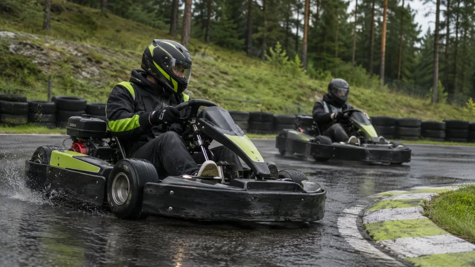
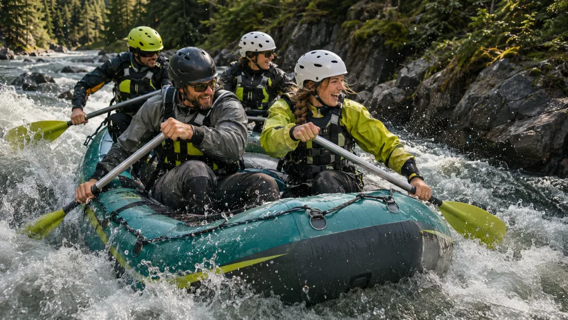

Ещё одна покупка гостя
Предложите видео вместе с активностью. Гость забирает личную историю, а площадка получает выручку от дополнительной услуги.
Видеосервис для площадок с активностями
Заезд закончился. Впечатление осталось — в видео, которое хочется забрать с собой. Мы монтируем ролики и отправляем гостям. Вы получаете долю от продаж.
Удобнее написать? Мы в Telegram
01 / Для вашего бизнеса
выручки от продажи видео
может получать площадка
Вам не нужно собирать команду монтажёров. Мы превращаем записи в готовые ролики и организуем доставку гостям. Долю площадки и объём работы согласуем под ваш проект.
До 70% — доля выручки от видеопродаж при согласованных условиях. Стоимость запуска, оборудование, текущие расходы и порядок расчётов обсуждаем индивидуально.
Предложите видео вместе с активностью. Гость забирает личную историю, а площадка получает выручку от дополнительной услуги.
Склейки, ракурсы и подготовка к выдаче — на нас. Ваша команда снимает и оформляет заказ по согласованному процессу.
Разовые события или регулярные заезды: заранее обсудим объём, сроки и передачу материалов, чтобы справляться с нагрузкой.
02 / Что получает гость
Видео с собой в главной роли. Для телефона, личного архива и тех, кому хочется показать: «Смотри, как это было».
Обновите страницу или откройте MP4 отдельно.
Открыть демо MP4 ↗Синтетический ролик, не съёмка с площадки.
Готовый ракурс
Выбираем лучшие моменты и собираем цельный ролик. Гостю остаётся нажать «смотреть» и сохранить его на телефон.
Свобода обзора
Зритель сам выбирает, куда смотреть. Для этого нужны панорамный исходник и совместимый плеер.
Панорамный пример добавим после согласования материала. Ролик слева показывает обычное видео.
Реальные проекты покажем после согласования публикации с площадками. Пока здесь — демонстрация формата и выдачи ролика.
03 / Для похожих активностей
Видео может стать частью самых разных впечатлений. Найдём подход к вашей активности — от знакомого сценария до сложного проекта.

Повороты, обгоны, финиш. Личная история заезда с ракурсом из самого события.

Момент, к которому хочется вернуться. Обсудим съёмку и крепления для вашей активности.

Поездки, спуски и необычные маршруты. Предложите свою идею — обсудим, как её снять.
Иллюстрации ImageGen
Похожая активность или совсем другой формат?
Давайте обсудим ваш проект04 / От съёмки до сообщения
Согласуем понятный процесс для вашей команды: кто снимает, как передаются записи и когда гость получает ролик.
Ваша команда предлагает ролик вместе с активностью и оформляет оплаченный заказ.
По согласованной схеме передаёте исходники. Связываем материал с заказом, чтобы каждый получил своё видео.
Работаем с ракурсами, выбираем моменты, монтируем и проверяем результат перед выдачей.
Отправляем готовый ролик или ссылку в WhatsApp, MAX или Telegram — по каналу, согласованному при запуске.
05 / С чего начнём
Посмотрим тестовую запись. Обсудим формат ролика, объём, сроки и передачу материалов. Подключим монтаж к вашему процессу.
Обсудить монтажПоможем подобрать камеры и крепления, согласуем бюджет и порядок установки. Проверим путь от тестовой съёмки до ролика у гостя.
Обсудить запускБез недосказанностей
Это возможная доля выручки от продажи видео, а не чистая прибыль. Доход после расходов зависит от стоимости оборудования, организации съёмки, текущих затрат и согласованных условий. Зафиксируем всё в предложении до запуска.
Посчитаем по данным вашей площадки. Выручка от видео за месяц = цена ролика × количество оплаченных видеозаказов за месяц. Возврат вложений зависит от доли площадки и её расходов.
Срок возврата вложений в месяцах = вложения на старте ÷ (месячная выручка от видео × доля площадки − ежемесячные расходы площадки).
Расчёт имеет смысл, если сумма в скобках положительная. Поток гостей и количество покупок видео — разные показатели; в расчёт идут оплаченные заказы. Итоговый срок зависит от фактических продаж.
Съёмку на площадке организуем вместе с вами. Если камеры уже есть, начнём с проверки исходника. Если нет — подберём комплект под активность и согласуем затраты. Для сферического просмотра нужны настоящая панорамная запись и подходящий плеер.
Обсудим ваши обычные и пиковые объёмы. До старта согласуем сроки монтажа, способ передачи записей и выдачи видео. Тест поможет проверить процесс до масштабирования.
Этот сайт знакомит площадки с сервисом. Показанная страница гостя — демонстрация. По поводу личного ролика обратитесь к сотрудникам площадки, где вы снимались.
Начнём с разговора
Расскажите о площадке и потоке гостей. Обсудим формат видео, условия сотрудничества и первый тест. Готовы разбирать проекты любой сложности.
Александр · Монтаж 360°
+7 952 217-67-44ПозвонитьОбсудим вашу задачу напрямую.
Без анкет и лишних шагов.